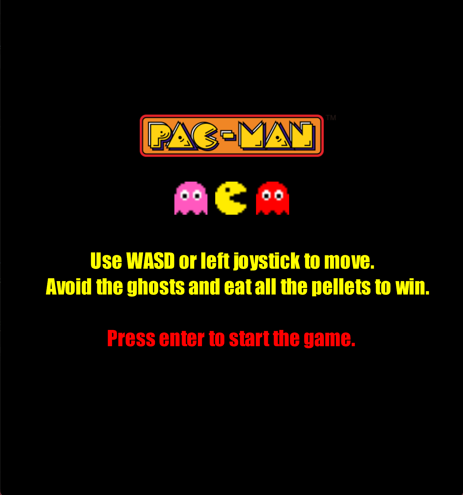
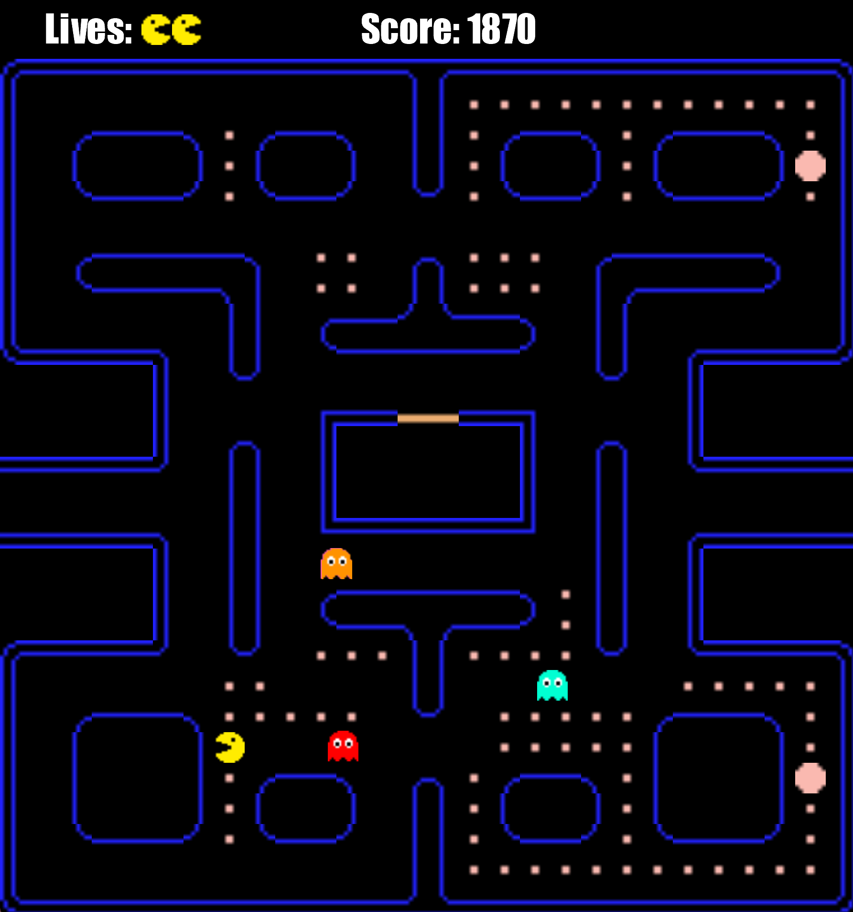

This project was a midterm for the AI Programming class at NEIT, intended to explore the behavior of the ghosts in the original Pac-Man game. The ghosts use a custom pathfinding function, and their behavior is changed by changing their target tile. Some ghosts target the location of the player, and some target a few tiles in front of the player. The ghosts also have an "evasion" state where their target location is set to a tile far away from the player.